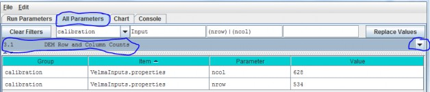
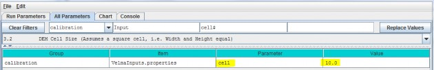
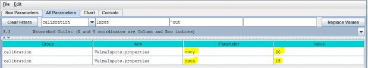

Spatial Dimensions and DEM File
The VELMA simulator requires a DEM file in order to run a simulation. The simulator also assumes that all otherspatial data files (discussed below) contain spatial data with the same overall (row and column) and cell(pixel) size dimensions as the DEM file. We highly recommend that the DEM used for VELMA simulations bepre-processed using the JPDEM software, rather than by other available "flat-processor" software (see Appendix7).The VELMA simulation configuration parameter that specifies the name of the DEM file is:
| Parameter Name | Parameter Description |
|---|---|
| input_dem example: | SmallWatershed_10m.asc |
The VELMA simulation configuration parameters that define the DEM file's location are:
| InputDataLocationRootName | example: CoastalSite |
| inputDataLocationDirName | example: C:\VelmaInputData |
Note that:
- Input_dem and inputDataLocationRootName are single file or directory names, while inputDataLocationDirName specifies a complete directory path.
- When a simulation is started, the DEM data is loaded from inputDataLocationRootName/inputDataLocationDirName/input_dem
- The DEM File's Dimensions are NOT Set Automatically by the Simulator or GUI
- The VELMA simulator does not read the DEM file's dimensions from the DEM file's header!
As part of parameterizing a VELMA simulation configuration, you must manually determine (usually by viewing theDEM file's header rows with a text editor) the DEM file dimensions, and set the corresponding VELMA simulationparameters (usually by using the JVelma GUI)
This table lists the header rows of a DEM (Grid ASCII) file and the corresponding VELMA simulation parameters:
| Grid ASCII Header Item | VELMA Simulation Configuration Parameter |
| ncols | Ncol |
| nrows | Nrow |
| xllcorner | cellOffsetX |
| yllcorner | cellOffsetY |
| cellsize | cell |
| nodata_value |
Sections 3.1 - 3.3 provide details on configuring these parameters for a DEM file.
Note: if you change the DEM file that a simulation is configured to use (i.e. you change the DEM filename for theinput_dem parameter) then you must ensure that all of the parameters above are updated as well.
3.1 - DEM Row and Column Counts
Specify values for the ncol and nrow parameters based on the DEM grid ASCII header items in the table above.

3.2 - DEM Cell Size (Assumes a square cell, i.e. Width and Height equal)
Specify the value of the cell parameter.

This describes the xy-dimension in meters of individual cells in the DEM grid ASCII file. In this example, eachcell is 10x10 meters. The choice of DEM cell size will depend upon the set of questions a user wishes toaddress. For example, applications focusing on the effect of riparian buffer width on nutrient export to streamsmay require relatively small cells (e.g., 10 meters), compared to applications focusing on ecosystem carbondynamics (e.g., 100 meters). Obviously, an application's total number of cells (and consequent simulation time)increases with the square of the ratio of alternative cell sizes - e.g., (100/10)2 = 100 times more cellsfor 10m versus 100m cell sizes. In any case, the specified cell size must be consistent with the DEM cell size.That is, the user cannot arbitrarily adjust the cell size parameter without telling VELMA to load a DEM havingthe same cell size (see All Parameters 3.0). Furthermore, the DEM used must be "flat- processed" for thespecified cell size using the JPDEM tool. The executable JPDEM.jar, a JPDEM user manual, and backgroundinformation (Pan et al. 2012) can be found here: VELMA Model\JPDEM_DEM Processor. The JPDEM user manual is alsoincluded in Appendix 7 of this manual.
3.3 - Watershed Outlet (X and Y coordinates are Column and Row indices)
Specify the value of the outx and outy parameters. These describe the watershed outlet cell's X andY coordinates (column index) relative to the DEM upper-left corner. The watershed outlet cell coordinates are determined using the JPDEM tool.
